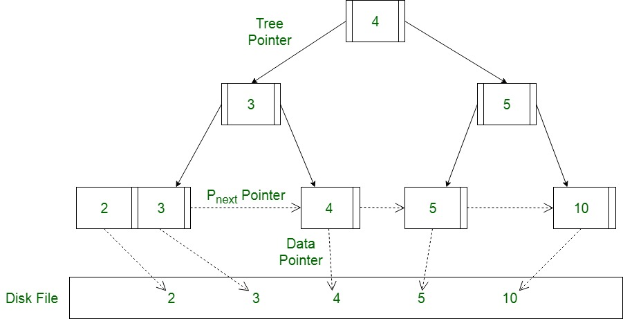

# 多路查找树
多路查找树 (muitl-way search tree)，其每一个节点的孩子数可以多于两个，且每一个节点处可以存储多个元素。主要有 4 中特殊形式。
和普通的查找树相比，多路查找树不仅一个节点有多个孩子而且一个节点不再是只能存储一个元素，这打破了我们对树的理解。正因为这个特性，使他能够出色的解决 IO 问题，而我们研究的 B,B+,B - 便是平衡的多路查找树
# B 树
一个 m 阶的 B 树具有如下属性：
- 如果根结点不是叶结点，则其至少有两棵子树。
- 每一个非根的分支结点都有 k-1 个元素和 k 个孩子，其中 [m/2]≤ k ≤ m。每一个叶子结点 n 都有 k-1 个元素，其中 [m/2]≤ k ≤ m
- 所有叶子结点都位于同一层次。
- 所有分支结点包含下列信息数据 (n, A0, K1, A1, K2, A2, …, Kn, An)，其中: Ki ( i=1, 2, …, n ) 为关键字，且 Ki<Ki+1 ( i=1, 2, …, n-1 ); Ai ( i=0, 2, …, n) 为指向子树根结点的指针，且指针 Ai-1 所指子树中所有结点的关键字均小于 Ki ( i=1, 2, …, n ) ，An 所指子树中所有结点的关键字均大于 Kn，n ( [m/2]-1 ≤ n ≤ m-1 ) 为关键字的个数 (或 n+1 为子树的个数)
用人话来说，一颗 m 阶 B 树有以下特点
- 每个节点最多包含 m 个节点
- 如果根节点包含子节点，则至少有 2 个子节点。除根节点外，每个节点至少包含 m/2 个子节点
- 拥有 k 个子节点的非叶节点最多包含 k-1 个记录 (k<m-1)
- 所有的叶子节点在最后一层
上面是一个 3 阶 B 树，包含了以上所有的特点
# 查询

如上图我要从上图中找到 E 字母，查找流程如下
- 获取根节点的关键字进行比较，当前根节点关键字为 M，E<M（26 个字母顺序），所以往找到指向左边的子节点（二分法规则，左小右大，左边放小于当前节点值的子节点、右边放大于当前节点值的子节点）
- 拿到关键字 D 和 G，D<E<G 所以直接找到 D 和 G 中间的节点
- 拿到 E 和 F，因为 E=E 所以直接返回关键字和指针信息（如果树结构里面没有包含所要查找的节点则返回 null）；
# 插入
遵循规则：
节点拆分规则：当前是要组成一个 5 路查找树，那么此时 m=5, 关键字数必须 <=5-1（这里关键字数> 4 就要进行节点拆分）, 拆分的时候把中间节点往上升级
排序规则：满足节点本身比左边节点大，比右边节点小的排序规则；
定义一个 5 阶树（平衡 5 路查找树；），现在我们要把 3、8、31、11、23、29、50、28 这些数字构建出一个 5 阶树出来；
先插入 3、8、31、11

当插入 23 的时候，发现元素等于 5 了，这时候需要拆分节点，此时把中间节点 11 升级，然后再插入 29

再插入 50，最后插入 28 的时候发现右孩子元素又等于 5 了，这时候把中间节点 29 升级到与 11 同一级

# 删除
规则：
- 节点合并规则：当前是要组成一个 5 路查找树，那么此时 m=5, 关键字数必须大于等于 ceil（5/2）（这里关键字数 < 2 就要进行节点合并）；
- 满足节点本身比左边节点大，比右边节点小的排序规则；
- 关键字数小于二时先从子节点取，子节点没有符合条件时就向向父节点取，取中间值往父节点放；

# 特点
B 树相对于平衡二叉树的不同是，每个节点包含的关键字增多了，特别是在 B 树应用到数据库中的时候，数据库充分利用了磁盘块的原理（磁盘数据存储是采用块的形式存储的，每个块的大小为 16K，每次 IO 进行数据读取时，同一个磁盘块的数据可以一次性读取出来）把节点大小限制和充分使用在磁盘快大小范围；把树的节点关键字增多后树的层级比原来的二叉树少了，减少数据查找的次数和复杂度；
# B + 树

B + 树通过仅在树的叶节点上存储数据指针，消除了用于索引的 B 树的缺点。因此，B + 树的叶节点的结构与 B 树的内部节点的结构完全不同。在这里应该指出，由于数据指针仅存在于叶节点上，因此叶节点必须必须将所有键值及其对应的数据指针存储到磁盘文件块，以便访问它们。此外，叶节点链接到提供对记录的有序访问。因此，叶节点形成索引的第一层，内部节点形成多级索引的其他层。叶子节点的某些关键值也出现在内部节点中，以简单地充当控制记录搜索的媒介
# B 树与 B + 树的区别
| B 树 | B + 树 |
|---|---|
| 所有内部和叶节点都有数据指针 | 只有叶节点具有数据指针 |
| 树中没有 key 的重复项 | key 重复，并且所有节点都位于叶子上 |
| 叶节点不存储为结构链表 | 叶节点存储为结构链表 |
B + 树对于 B 树的改进主要有：
- 更少的 IO 次数
非叶子节点去掉了其中指向 data record 的指针，使得每个结点能存放更多的 key，这使得 B + 树的高度会比 B 树低，访问时所需要的 IO 次数就会少很多。此外，由于每个节点存储的记录数更多，所以对访问局部性原理的利用更好，缓存命中率更高 - 更适于范围查询
底部叶子节点是链表的形式，因此可以实现更方便的顺序遍历 - 更稳定的查询效率
因为 B 树的所有节点都存储数据所以 B 树查询时间复杂度不稳定，可能第一个就命中也可能最后一个才命中，而 B + 树的数据都在叶子节点，所以 B + 树的查询复杂度稳定为
B + 树也有劣势，由于键会重复，因此会占用更多空间。但是与带来性能优势相比，空间劣势往往可以接受，因此 B + 树在数据库比 B 树使用范围更广
# B - 树
暂时没用到，待补充